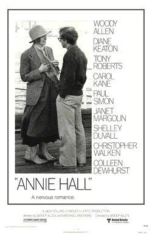
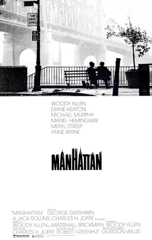
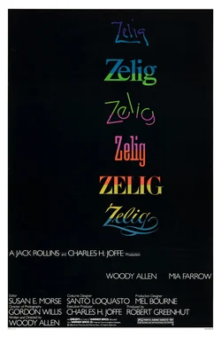
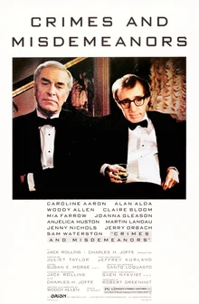
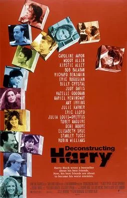
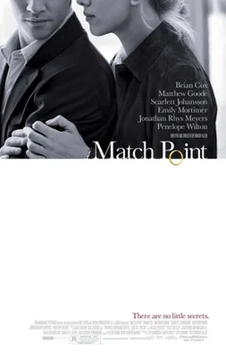
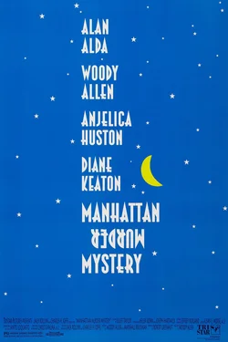

Explore film ↗Annie Hall
Woody Allen
DIRECTOR PROFILE
Woody Allen (born Allan Stewart Konigsberg; November 30, 1935) is an American filmmaker, actor, writer, and comedian.

LIFE & CAREER
Woody Allen (born Allan Stewart Konigsberg; November 30, 1935) is an American filmmaker, actor, writer, and comedian. In a career spanning more than seven decades, he has written for film, television, and theater. As a screenwriter, Allen holds the record of most wins (3) and nominations (16) for the Academy Award for Best Original Screenplay.
Adapted excerpt from Wikipedia, CC BY-SA 4.0. Pronunciation notes omitted.
Read the full biographyImage: Georges Biard. Source & rights: CC BY-SA 3.0 ↗.
Profile reference: Director background ↗
Open this director checklist ↗
A selection of this director’s films available in the archive.

Explore film ↗Woody Allen

Explore film ↗Woody Allen

Explore film ↗Woody Allen
 Explore film ↗
Explore film ↗Woody Allen

Explore film ↗Woody Allen

Explore film ↗Woody Allen
 Explore film ↗
Explore film ↗Woody Allen

Explore film ↗Woody Allen

Explore film ↗Woody Allen